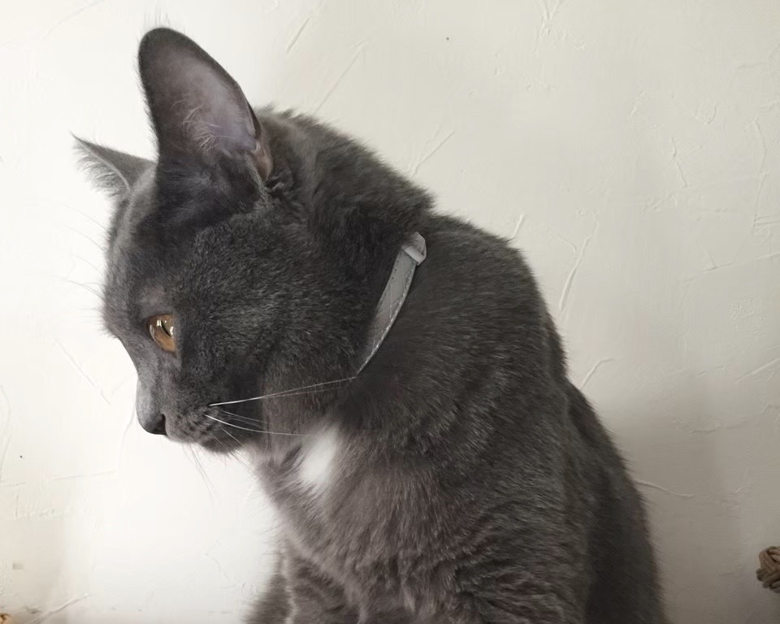

Member

チェガン｜Chegan
おかゆが勤める会社の壁の中にいるのを発見。仔猫の時は小さかったが今では一番大きい。柑橘系の匂いが好き。名前の由来は韓国語で「最強」
2013年9月1日生まれ(7歳)

チャル｜Charu
チェガンと同じく会社の壁の中にいるのを発見。とある病気で九死に一生を得た。グッディーに対して一方的に敵対心を持っている。名前の由来は韓国語で「可愛い」
2013年9月1日生まれ(7歳)

モッフィー｜Moffy
チェガンとチャルから生まれた。グレーでモフモフの毛並みが特徴的で、名前の由来にもなっている。
2014年7月24日生まれ(6歳)

グッディー｜Gyddy
家の前をウロウロしていたところを保護。飼い主を探したが一向に見つからず原田家で飼うことに。名前の由来は「Good Day」を文字ったところからきている。
2015年6月1日生まれ(5歳)

きなこ｜Kinako
家の裏で鳴いていたところを保護。４回曲がった鍵しっぽが特徴的。毛色がきな粉っぽいとこらから名づけられた。
2017年11月1日生まれ(3歳)